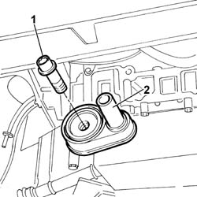
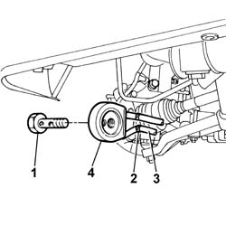
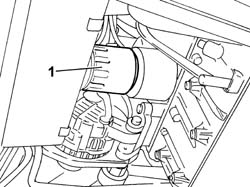
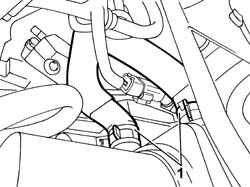
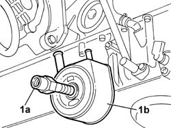

1084C10 STAFFA DI SUPPORTO DEL RADIATORE RAFFREDDAMENTO OLIO MOTORE - R.R.
- Path
- Procedures > 10 ENGINE UNIT > 1084 ENGINE LUBRICATION SYSTEM > 1084C ENGINE OIL COOLING CIRCUIT > 1084C10 STAFFA DI SUPPORTO DEL RADIATORE RAFFREDDAMENTO OLIO MOTORE - R.R.
- Kind
- repair procedure (removal / refitting; the operation number is the code)
- Applies to
- engines: 2.0 JTD 8V, 2.3 JTD 16V, 2.8 JTD 8V; all production periods
- Interactive page
- https://sloeber94.github.io/elrnDB-fDct/en/#/244000939
Applies to: engines: 2.3 JTD 16V; all production periods
 Removing
Removing
 Refitting
RefittingOp. 7055B54 UNDER-ENGINE GUARD - R R
See in Op. 1084B30
1. Undo the pin securing the heat exchanger to the crankcase.
2. Remove the engine oil heat exchanger.

Applies to: engines: 2.3 JTD 16V; all production periods
Refitting
Removing- Change -the o-rings in the heat exchanger seat.
- Fit the engine oil heat exchanger in its seat on the crankcase and tighten the retaining pin to torque.
 | Value - daNm | Fastening | Component | Ø |
|---|---|---|---|---|
. | 8 | Pin | ENGINE OIL HEAT EXCHANGER | M22X1,5 |
See in Op. 1084B30
Op. 0010T10 ENGINE OIL CHECK LEVEL AND TOP UP
Applies to: engines: 2.8 JTD 8V; all production periods
Removing
RefittingOp. 7055B54 UNDER-ENGINE GUARD - R R
- Place a container to collect the oil beneath the oil sump.
- Undo the plug on the oil sump and drain the oil.
- Tighten the engine oil plug to torque.
1. Undo the retaining bolt.
2. Open the retaining bands.
3. Release the pipes from the heat exchanger.
4. Remove the engine oil heat exchanger.

Applies to: engines: 2.8 JTD 8V; all production periods
Refitting
Removing- Fit the pipes on the heat exchanger and renew the fastening bands.
- Position the heat exchanger and tighten the fixing bolt to torque.
| Value - daNm | Fastening | Component | Ø |
|---|---|---|---|---|
. | 7 | Bolt | ENGINE OIL HEAT EXCHANGER | M20 X 1.5 |
Applies to: engines: 2.0 JTD 8V; all production periods
Removing
RefittingOp. 7055B54 UNDER-ENGINE GUARD - R R
- Position a suitable container under the oil filter to collect the engine oil.
1. Remove the engine oil cartridge filter.

Applies to: engines: 2.0 JTD 8V; all production periods
- Position a suitable container for collecting the engine coolant under the heat exchanger.
1. Using a special tool, disconnect the engine coolant inlet and outlet pipes from the oil cooling heat exchanger.
 | Description | Code | Function |
|---|---|---|---|
. | Caliper | 1.831.138.000 | Band opening |

Applies to: engines: 2.0 JTD 8V; all production periods
1. Undo the fixing pin (1a) and remove the oil cooling heat exchanger (1b).

Applies to: engines: 2.0 JTD 8V; all production periods
Refitting
Removing- Position the oil cooling heat exchanger on the oil pump front cover.
- Tighten the pin fixing the oil cooling heat exchanger to torque.
- Connect the engine coolant inlet and outlet pipes to the oil cooling heat exchanger.
- Tighten the oil filter by hand and lubricate the filter seal with engine oil.
- Check the quantity of oil in the engine.
- Check the quantity of coolant in the engine.
- Top up, if necessary, using the same engine coolant.
Op. 0010T21 COOLANT CHECK DENSITY AND TOP UP IF NECESSARY
Topics linked from this page (6)
- 0010T10 ENGINE OIL CHECK LEVEL AND TOP UP
- 0010T11 ENGINE OIL CHECK LEVEL AND TOP UP
- 0010T20 COOLANT CHECK DENSITY AND TOP UP IF NECESSARY
- 0010T21 COOLANT CHECK DENSITY AND TOP UP IF NECESSARY
- 1088D51 COOLANT SUPPLY PIPE FROM CRANKCASE TO OIL/WATER HEAT EXCHANGER - R.R. WITH REAR ENGINE SUPPORT REMOVED
- 7055B54 UNDER-ENGINE GUARD - R R